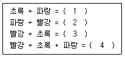
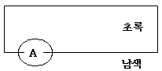

금속도장기능사 (2009-01-18 기출문제)
1과목: 색채
1. 다음 중 감법혼색의 3원색이 아닌 것은?
- Magenta
- Yellow
- Cyan
- Green
(정답률: 알수없음)

2. 먼셀 표준 20 색상환에서 자주색의 색명 기호는?
- RP
- GY
- YR
- PB
(정답률: 85%)
3. 먼셀 표색계에서 색입체의 설명으로 옳은 것은?
- 색채를 사용하여 만든 등색상 삼각형
- 색을 속성에 따라 분류하고, 그것을 계통적으로 배열한 것
- 색상에 따라 색환을 만들고, 그것을 기하학적으로 배열한 것
- 여러 가지 색을 차례대로 늘어놓은 둥근 원
(정답률: 알수없음)
4. 다음 중 중간혼합이 아닌 것은?
- 병치혼합
- 회전혼합
- 색팽이혼합
- 색잉크혼합
(정답률: 80%)
5. 감법혼합에서 3원색을 혼색하면 무슨 색이 되는가?
- 검정색
- 흰색
- 밤색
- 자주색
(정답률: 70%)
6. 다음 색상환의 보색 관계로 틀린 것은?
- 주황 - 파랑
- 자주 - 초록
- 빨강 - 파랑
- 연두 - 보라
(정답률: 70%)
7. 다음 중 동시대비와 가장 거리가 먼 것은?
- 색상대비
- 면적대비
- 보색대비
- 명도대비
(정답률: 알수없음)
8. 보기는 가법혼색에 대한 내용이다. ( )안에 들어갈 순서로 옳은 것은?

- 청록 - 자주 - 노랑 - 검정
- 청록 - 녹색 - 주황 - 흰색
- 청록 - 노랑 - 자주 - 검정
- 청록 - 자주 - 노랑 - 흰색
(정답률: 74%)
9. 다음 그림의 A부분을 잘 나타나게 하려면 어느색이 가장 적당한가?

- 보라색
- 자주색
- 노랑색
- 파랑색
(정답률: 70%)
10. 색의 수반감정(隨班感情)중 온도감에 대한 설명으로 옳은 것은?
- 온도감은 명도에는 관계가 있으나 채도와는 관계가 없다.
- 단파장쪽의 색이 따뜻하고, 장파장 쪽의 색은 차다.
- 무채색의 경우에는 명도가 높으면 따뜻하고 명도가 낮으면 차갑다.
- 온도감은 색상에 의한 효과가 대단히 크다.
(정답률: 43%)
11. 색채의 종류와 표시 사항이 잘못 나열된 것은?
- 초록 : 안전유도, 피난방법
- 흰색 : 추가정보
- 빨강 : 화재안전, 소화전
- 파랑 : 경고/주의
(정답률: 알수없음)
12. 촉각은 시각을 보조하여 색의 특성이나 재료감 등을 더욱 증가 시키는 역할을 한다. 촉각으로 느끼는 감각이 잘못 연결된 것은?
- 건조한 느낌 - 난색 계열
- 촉촉한 느낌 - 파랑과 청록 등의 한색 계열
- 부드러운 느낌 - 밝은 핑크, 밝은 하늘색, 밝은 노랑
- 강하고 딱딱한 느낌 - 상대적으로 어둡고 채도가 높은 색채
(정답률: 알수없음)
13. 화학적 세정방법 중 알칼리 세정법은 검화작용에 의해 금속표면의 유지분을 제거한다. 다음 중 pH가 가장 높은 알칼리 세정액에서 침식이 일어나는 금속은?
- 주석
- 아연
- 알루미늄
- 규소철
(정답률: 알수없음)
14. 인산계 처리에 관한 설명 중 틀린 것은?
- 처리액을 희석하면 산비가 높아진다.
- 유리인산의 농도가 증가하면 스파클이많아진다
- 스파클이 많아지면 인산철의 함유량이증가한다
- 인산철의 함유량이 증가되면 내식성이저하된다
(정답률: 70%)
15. 내열성, 전기절연성 등이 특히 우수하여 석유난로, 보일러 등에 많이 사용되고 있는 도료는?
- 멜라민 수지도료
- 프탈산 수지도료
- 열경화성 아크릴 수지도료
- 실리콘 수리도료
(정답률: 알수없음)
16. 다음 중 페인트 도막 충진제로 사용하는 안료는?
- 방청안료
- 알루미늄안료
- 유기안료
- 체질안료
(정답률: 알수없음)
17. 샌드블라스트에 사용되는 가장 적합한 모래의 이산화규소 함유량은?
- 35% 이하 포함
- 50~60% 포함
- 70~80% 포함
- 95% 이상 포함
(정답률: 46%)
18. 도료가 구비해야 할 일반적인 조건으로 틀린것은?
- 도막은 내후성, 화학적 저항성이 커야 한다.
- 평활하고 광택 있는 도막을 형성해야 한다.
- 도막은 단단하고 유연하며, 충격이나 굽힘 등에 박리되지 않아야 한다.
- 속 건성 또는 고온경화성이라야 한다.
(정답률: 90%)
19. 중도 도료에 관한 설명 중 틀린 것은?
- 하도와 상도의 중간에 도장하는 도료이다.
- 상도면의 표면을 평활하게 하기 위한 것이다.
- 하도면을 보호하는 역할을 한다.
- 보통 상도면의 칠색과 유사한 것을 사용하지 않는다.
(정답률: 알수없음)
20. 경도, 부착성, 가소성, 내약품성이 우수하지만 폭로(暴露)에 의한 광택 소실 등의 내후성이 떨어지는 도료는?
- 아크릴 수지도료
- 아미노 알키드 수지도료
- 에폭시 수지도료
- 유변성 폴리우레탄 수지도료
(정답률: 46%)
2과목: 금속도장재료
21. 안료를 함유한 도료 중 전색제가 아닌 것은?
- 티탄백
- 페놀수지
- 송진
- 아크릴수지
(정답률: 알수없음)
22. 다음 중 알칼리 세척제로서 구비하여야 할 조건 중 틀린 것은?
- pH 8.3 이상의 용액이어야 한다.
- 유지를 용해할 수 있어야 한다.
- 표면장력이 높아야 한다.
- 부식성이 심하지 않아야 한다.
(정답률: 알수없음)
23. 일반적으로 산세의 속도가 가장 빠른 산의 종료는?
- 염산
- 황산
- 인산
- 질산
(정답률: 90%)
24. 다음 중 비철금속이 아닌 것은?
- 구리
- 니켈
- 주석
- 연철
(정답률: 80%)
25. 다음 도료 중 열경화성수지에 해당 되지 않는 것은?
- 멜라민수지
- 스티렌수지
- 페놀수지
- 에폭시수지
(정답률: 알수없음)
26. 다음 중 열경화성 아크릴 수지도료의 특성으로 틀린 것은?
- 내후성이 우수하다.
- 색상 보유력이 좋다.
- 부착성, 내오염성이 좋다.
- 가열온도가 100℃ 이하이다.
(정답률: 82%)
27. 다음 중 건축물, 선반, 차량, 교량의 내외부에 많이 사용되는 도료는?
- 실리콘 수지도료
- 래커계 도료
- 유성 도료
- 아크릴 수지도료
(정답률: 30%)
28. 도료제조 공정에서 필요하지 않는 설비는?
- 분산장치
- 침투장치
- 용해장치
- 여과장치
(정답률: 알수없음)
29. 도막에 유연성, 부착성, 내한성, 내충격성 등을 부여할 목적으로 첨가되어지는 것은?
- 가소제
- 소포제
- 난연제
- 소광제
(정답률: 알수없음)
30. 프라이머의 방청기능과 서페이서의 충전기능을 겸한 중도도료는?
- 오일 서페이서
- 래커 서페이서
- 아크릴 서페이서
- 아미노 알키드 퍼세이서
(정답률: 37%)
31. 형상이 복잡한 피도물에 가장 적합한 도장 방법은?
- 에어리스 도장법
- 전착 도장법
- 분체 도장법
- 정전 도장법
(정답률: 64%)
32. 도장 작업시 주의 사항이 틀린 것은?
- 저온 다습을 피한다.
- 바탕의 조정에 정성을 들인다.
- 도료의 성능 성질에 적합한 도장 용구를 쓰며 항상 정비해 둔다.
- 도막을 두껍게 칠한다.
(정답률: 100%)
33. 액체 호닝장치의 설명으로 옳은 것은?
- 압축공기의 물을 분사하는 장치이다.
- 물과 모래를 수압에 의하여 혼합 분사하는 장치이다.
- 모래를 압축공기로 분사하는 장치이다.
- 물과 모래를 혼합하여 중력으로 분사하는 장치이다.
(정답률: 40%)
34. 스프레이 건 분무 도장시 한쪽으로 굽는 활꼴 패턴의 원인과 관계가 없는 것은?
- 노즐의 한편에 먼지가 끼어 있다.
- 도료의 점도가 낮다.
- 공기 캡 중앙의 구멍과 도료 노즐 사이에 한곳이 막혔다.
- 공기 캡 또는 도료 노즐의 어느 면에 흠이 생겼다.
(정답률: 알수없음)
35. 쇼트 블라스트 장치에 관한 설명 중 틀린 것은?
- 장치가 밀폐식이어서 분진 분산이 없다.
- 형식에는 수평식과 수직식이 있다.
- 연소재를 전동날개의 원심력으로 투사하여 강재 표면의 흑피 등을 제거한다.
- 6mm 이하의 강판에 적합한 작업이다.
(정답률: 알수없음)
36. 알칼리 탈지법에 해당 되지 않는 것은?
- 침적 세척법
- 분산 세척법
- 전해 세척법
- 에멀션 세척법
(정답률: 알수없음)
37. 상도 페인트 1회 도포량의 두께로 가장 적합한 것은?
- 5~8㎛
- 10~15㎛
- 45~60㎛
- 30~35㎛
(정답률: 알수없음)
38. 서페이서를 도포하는 목적과 직접적인 관계가 없는 것은?
- 도막의 내후성을 강화하기 위하여
- 도면의 평활도를 조정하기 위하여
- 외적 충격에서 하지를 보호하기 위하여
- 상도 도료의 용제 침투를 막기 위하여
(정답률: 알수없음)
39. 다음 기공구 중 수연마(wet sanding)에 가장 적당한 것은?
- 에어 샌더
- 유니버설 샌더
- 벨트 샌더
- 로터리 샌더
(정답률: 알수없음)
40. 작은 구면이나 도막의 광택제거에 가장 적합한 연마제는?
- 스틸 울
- 경석
- 숫돌
- 연마지
(정답률: 알수없음)
3과목: 금속도장
41. 다음 중 적외선전구 건조장치의 페인트 표면에 대한 적외선전구 방사 흡수율이 가장 높은 색은?
- 노란색
- 검정색
- 흰색
- 적갈색
(정답률: 알수없음)
42. 열풍건저로의 특징과 가장 관련이 없는 것은?
- 대류 열기이므로 형태에 구애받지 않는다.
- 노 내의 온도 분포가 균일하다.
- 색상에 따라 온도차가 없다.
- 온도 관리가 불편하다.
(정답률: 46%)
43. 붓의 종류와 그 붓에 주로 많이 사용되는 털 재료와의 연결이 틀린 것은?
- 페인트 붓 - 말털, 돼지털
- 바니시 붓 - 말털, 양털
- 래커 붓 - 돼지털
- 수성 붓 - 양털
(정답률: 알수없음)
44. 공기 트랜스포머의 설명 중 틀린 것은?
- 압축공기의 압력을 조절하는 장치이다.
- 기름기를 여과시키는 장치이다.
- 물기를 여과시키는 장치이다.
- 도료를 여과하는 장치이다.
(정답률: 알수없음)
45. 커튼 플로 코팅 도장의 설명으로 틀린 것은?
- 평면상 물체를 연속적으로 도장하는데 적합하다.
- 도막이 두꺼운 도장이 가능하고 균일한 도막 상태를 얻을 수 있다.
- 희석제가 비교적 많이 필요하다.
- 수직면이나 복잡한 형상을 도장하는데 적합하다.
(정답률: 알수없음)
46. 농도가 짙은 도료의 점도 측정용으로 적합한 것은?
- 모세관 점도계
- 가드너 기포 점도계
- 스토머 점도계
- 침입 점도계
(정답률: 알수없음)
47. 수연 작업시 사용한 물(수분)을 완전히 제거하지 않고 도장했을 때 주로 발생되는 불량은?
- 크래킹
- 핀홀
- 블리스터
- 엘로우잉
(정답률: 50%)
48. 오일 프라이머를 도포하고 1시간 건조시킨 후 래커 도료를 도포하였더니 결함이 발생하였다면, 그 결함은?
- 핀홀
- 번짐
- 오렌지필
- 블리스터
(정답률: 39%)
49. 샌드 블라스트 작업에 따른 주된 위험 질병은?
- 규폐증
- 중이염
- 일사병
- 백혈병
(정답률: 알수없음)
50. 도장작업 중 중독자에 대한 응급처치 사항으로 틀린 것은?
- 통풍이 잘 되는 곳에서 안정시킨다.
- 피복 등 신체의 압박을 제거한다.
- 가스를 흡입한 것으로 판단되면 기도를 개방하고 상태를 조사한다.
- 옷을 벗겨 체온을 내리게 한다.
(정답률: 100%)
51. 용제 취급 중 용제가 피부에 묻었을 때의 조치로 가장 적합한 것은?
- 비눗물로 씻는다.
- 그대로 건조 시킨다.
- 다른 용제로 씻는다.
- 크림을 바른다.
(정답률: 알수없음)
52. 재해의 발생 형태별 종류에 대한 설명으로 틀린것은?
- 전도 : 사람이 평면상으로 넘어지는 사고
- 협착 : 전기 접촉 등으로 사람이 충격을 받는 사고
- 추락 : 사람이 비계 등에서 떨어진 사고
- 붕괴 : 비계가 무너진 사고
(정답률: 알수없음)
53. 유기용제에 의한 예방 대책으로 틀린 것은?
- 체내에 흡입을 방지한다.
- 피부와의 접촉을 방지한다.
- 안전모를 꼭 착용한다.
- 유기용제용 안전마스크를 착용한다.
(정답률: 알수없음)
54. 다음 중 가전제품의 상도용 도료로 많이 사용되는 도료는?
- 페놀 수지도료
- 비닐 수지도료
- 아크릴 수지도료
- 에폭시 수지도료
(정답률: 60%)
55. 다음 중 퍼티 바르기 작업시 굴곡이 심한 부분의 도장에 가장 적합한 주걱은?
- 쇠 주걱
- 고무 주걱
- 나무 주걱
- 플라스틱 주걱
(정답률: 100%)
56. 에어 컴프레서의 압력이 오르지 않는 경우의 원인은?
- 흡입구가 막혀 있을 때
- 피스톤에 카본이 고여 있을 때
- 크랭크 케이스의 기름 부족
- 윤활유의 순환이 나쁠 때
(정답률: 알수없음)
57. 굴곡 시험기의 주된 용도로 옳은 것은?
- 유동성 측정
- 건조성 측정
- 부착성 측정
- 내구성 측정
(정답률: 36%)
58. 다음 중 메탈릭 얼룩 현상의 원인으로 볼 수 없는 것은?
- 풍속이 느리고 온도가 낮다.
- 스프레이 압력이 낮고 도막이 두껍다.
- 도장의 점도가 낮다.
- 스프레이 건 구경이 작다.
(정답률: 64%)
59. 다음 중 도장 방법별 분류에 대한 설명 중 틀린것은?
- 분체도장
- 전착도장
- 금속도장
- 정전도장
(정답률: 알수없음)
60. 붓 도장의 장점으로 틀린 것은?
- 누구나 쉽게 도장 할 수가 있다.
- 옥내·외를 불문하고, 피도장물의 대소에 관계없이 칠할 수 있다.
- 소재의 구석구석까지 칠할 수 있다.
- 속 건성 도장이 쉽다.
(정답률: 알수없음)